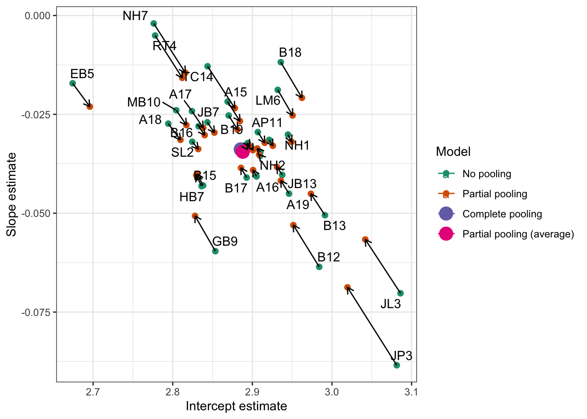

Week 18 Developing linear mixed-effects models: workbook overview
Welcome to your overview of the work we will do together in Week 18.
We have been learning to:
To recognize the situations where we shall see multilevel structured data and therefore where we will need to apply multilevel or mixed-effects models.
To understand the nature and the advantages of these models: what they are, and why they work better than other kinds of models, given multilevel data.
To practice how we code for mixed-effects models, and how we read or write about the results.
We now need to develop our understanding and skills further. And we now need to examine some of the complexities that we may face when we work with mixed-effects models.
The key idea
Shrinkage or regularization means that models of data should be excited by the data but not too excited.
Targets
We have three capacities that we are seeking to develop this week:
to understand mixed-effects models;
to work with these models practically or efficiently in R;
and to communicate their results effectively (to ourselves and others).
Targets
You can test your development against this checklist of targets for learning.
We want to develop the capacity to understand mixed-effects models, the capacity to:
recognize where data have a multilevel structure;
recognize where multilevel or mixed-effects models are required;
distinguish the elements of a mixed-effects model, including fixed effects and random effects;
explain how random effects can be understood in terms of random differences (or deviations) between groups or classes or individuals, in intercepts or slopes;
explain how random effects can be understood in terms of variances, as a means to account for random differences between groups or classes or individuals in intercepts or slopes;
explain how mixed-effects models work better than linear models, for multilevel structured data;
explain how mixed-effects models work better because they allow partial-pooling of estimates.
We want to develop the capacity to work practically with mixed-effects models in R, the capacity to:
specify a mixed-effects model in lmer() code;
identify how the mixed-effects model code varies, depending on the kinds of random effects that are assumed;
identify the elements of the output or results that come from an lmer() mixed-effects analysis;
interpret the fixed-effects estimates;
interpret the random effects estimates, including both the variance and covariance estimates.
We want to develop the capacity to communicate the results of mixed-effects models effectively, to ourselves and to others, the capacity to:
describe in words and summary tables the results of a mixed-effects model;
visualize the effects estimates or predictions from a mixed-effects model.
Learning resources
You will see, next, the lectures we share to explain the concepts you will learn about, and the practical data analysis skills you will develop. Then you will see information about the practical materials you can use to build and practise your skills.
Every week, you will learn best if you first watch the lectures then do the practical exercises.
Linked resources
To support your learning, you can read about the ideas and the practical coding required for analyses in the chapters I wrote for this course.
The lecture materials for this week are presented in three short parts.
Click on a link and your browser should open a tab showing the Panopto video for the lecture part.
Part 1 (13 minutes) Developing the capacity to understand and work with mixed-effects models: what we want to be able to do, and why; our working example data, and the study.
Part 2 (13 minutes): Data tidying, data transformation, and why we do this work; sample data, variation and the benefits of pooling.
Part 3 (24 minutes): The elements and the logic of mixed-effects models; the impact of including random effects, pooling, shrinkage and regularisation; how mixed-effects models are estimated.
Lecture slides
Download the lecture slides
You can download the lecture slides in three different versions:
The high resolution version is the version delivered for the lecture recordings. To make the slides easier to download, I produced lower resolution versions: 1pp and 6pp. These should be easier to download and print out if that is what you want to do.
Practical materials: data and R-Studio
We will be working with the ML word recognition study data-set. ML examined visual word recognition in younger and older adults using the lexical decision task.
In lexical decision, participants are presented with a stimulus: a string of letters that is either a real word (e.g., ‘car’) or a made-up or non-word (e.g., ‘cas’). Participants are required to respond to the stimulus by pressing a button to indicate either that they think the stimulus is a word or that they think it is a non-word. Each complete sequence of events, in which a stimulus is presented and a response is recorded, is known as a trial. In the lexical decision task implemented by ML, all study participants were presented with a mix of 160 word stimuli and 160 non-word stimuli, in random order, in a total of 320 trials.
Each stimulus was presented one at a time on the computer screen. The critical outcome measure was the reaction time (RT) or latency for each response. Observed RT represents the interval of time from the moment the stimulus was first presented (the stimulus onset) to the moment the response was made (the response onset).
The critical feature of the study, here, is that we have an outcome – a decision response – observed multiple times (for each stimulus) for each participant. We shall be analyzing the speed of response, reaction time (RT), measured in milliseconds (ms).
── Conflicts ────────────────────────────────────────── tidyverse_conflicts() ──
✖ dplyr::combine() masks gridExtra::combine()
✖ tidyr::expand() masks Matrix::expand()
✖ dplyr::filter() masks stats::filter()
✖ dplyr::lag() masks stats::lag()
✖ tidyr::pack() masks Matrix::pack()
✖ tidyr::unpack() masks Matrix::unpack()
ℹ Use the conflicted package (<http://conflicted.r-lib.org/>) to force all conflicts to become errors
Practical Part 2: Load the data
Practical Task 2 – Read in the data file we will be using
Read the data files into R:
Code
ML.all <-read_csv("subjects.behaviour.words-310114.csv", na ="-999")
Rows: 5440 Columns: 25
── Column specification ────────────────────────────────────────────────────────
Delimiter: ","
chr (6): subjectID, Test, Gender, Subject, item_name, item_type
dbl (18): item_number, Age, Years_in_education, TOWRE_wordacc, TOWRE_nonword...
num (1): SUBTLWF
ℹ Use `spec()` to retrieve the full column specification for this data.
ℹ Specify the column types or set `show_col_types = FALSE` to quiet this message.
The ML study data includes the following variables that we will work with (as well as some you can ignore):
Identifying variables
subjectID – identifying code for participants
item_name – words presented as stimuli
item_number – identifying code for words presented
Response variables
RT – response reaction time (ms), for responses to words, i.e., word recognition time
Participant attribute variables
Age – in years
Gender – coded M (male), F (female)
TOWRE_wordacc – word reading skill, words read correctly (out of 104)
TOWRE_nonwordacc – nonword reading skill, nonwords (made up words) read correctly (out of 63)
ART_HRminusFR – reading experience score
Stimulus property variables
Length – word length, in letters
Ortho_N – orthographic neighbourhood size, how many other words in English a stimulus word looks like
OLD – orthographic Levenshtein distance, how many letter edits (addition, deletion or substitution) it would take to make a stimulus word look like another English word (a measure of orthographic neighbourhood) (Yarkoni et al., 2008)
BG_Sum, BG_Mean, BG_Freq_By_Pos – measures of how common are pairs of letters that compose stimulus words
SUBTLWF, LgSUBTLWF, SUBTLCD, LgSUBTLCD – measures of how common stimulus words are, taken from the SUBTLEX corpus analysis of word frequency (Brysbaert & New, 2009)
Practical Part 3: Tidy the data
Tidying the data involves a number of tasks, some essential and some things we do for our convenience.
We are going to first filter the observations, then transform the outcome variable.
We do this work and use data visualization to examine the impacts of the actions.
Tip
It is always a good idea to first inspect what you have got when you read a data file into R before you do anything more demanding.
You cannot assume that the data are what you think they are
or that the data are structured or coded in the ways that you think (or have been told) they should be structured or coded.
Practical Task 3 – Produce a density plot showing word recognition reaction time, for both correct and incorrect responses
We should examine the distribution of the outcome variable, lexical decision response reaction time (RT in ms). Observations about variable value distributions are a part of Exploratory Data Analysis and serve to catch errors in the data-set (e.g. incorrectly recorded scores) but also to inform the researcher’s understanding of their own data.
Hint
We shall examine the distribution of the outcome variable, lexical decision response reaction time (RT in ms), using density plots. An alternative method would be to use histograms.
A density plot shows a curve. You can say that the density corresponds to the height of the curve for a given value of the variable being depicted, and that it is related to the probability of observing values of the variable within some range of values (Howell, 2016).
Figure 1: Density plot showing word recognition reaction time, correct and incorrect responses
The code to produce Figure 1 works in a series of steps.
ML.all %>% takes the data-set, from the ML study, that we have read in to the R workspace and pipes it to the visualization code, next.
ggplot(aes(x = RT)) + creates a plot object in which the x-axis variable is specified as RT. The values of this variable will be mapped to geometric objects, i.e. plot features, that you can see, next.
geom_density(size=1.5) + first displays the distribution of values in the variable RT as a density curve. The argument size=1.5 tells R to make the line \(1.5 \times\) the thickness of the line used by default to show variation in density.
Some further information is added to the plot, next.
geom_rug(alpha = .2) + with a command that tells R to add a rug plot below the density curve.
ggtitle("Raw RT") makes a plot title.
Notice that beneath the curve of the density plot, you can see a series of vertical lines. Each line represents the x-axis location of an RT observation in the ML study data set. This rug plot represents the distribution of RT observations in one dimension.
geom_rug() draws a vertical line at each location on the x-axis that we observe a value of the variable, RT, named in aes(x = RT).
geom_rug(alpha = .2) reduces the opacity of each line, using alpha, to ensure the reader can see how the RT observations are denser in some places than others.
Practical Task 4 – You should try out alternative visualisation methods to reveal the patterns in the distribution of variables in the ML data-set (or in your own data).
Take a look at the geoms documented in the {ggplot2} library reference section here.
Experiment with code to answer the following questions:
Would a histogram or a frequency polygon provide a more informative view? Take a look here for advice.
Practical Task 5 – Filter out incorrect and outlier short RT observations
The code example, shown above, delivers a plot (Figure 1) showing three peaks in the distribution of RT values. You can see that there is a peak of RT observations around 500-1000ms, another smaller peak around -500ms, and a third smaller peak around -2000ms.
The density plot shows the reaction times recorded for participants’ button press ‘yes’ responses to word stimuli in the lexical decision task. The peaks of negative RTs represent observations that are impossible.
How do we deal with the impossible RT values?
Hint
The density plot shows us that the raw ML lexical decision RT variable includes negative RT values corresponding to incorrect response. These have to be removed.
We can do this quite efficiently by creating a subset of the original “raw” data, defined according to the RT variable using the {dpyr} library filter() function.
Code
ML.all.correct <-filter(ML.all, RT >=200)
The filter code is written to subset the data by rows using a condition on the values of the RT variable.
ML.all.correct <- filter(ML.all, RT >= 200) works as follows.
ML.all.correct <- filter(ML.all ...) creates a new data-set with a new name ML.all.correct from the old data-set ML.all using the filter() function.
filter(... RT >= 200) specifies an argument for the filter() function.
In effect, we are asking R to check every value in the RT column.
R will do a check through the ML.all data-set, row by row.
If a row includes an RT that is greater than or equal to 200 then that row will be included in the new data-set ML.all.correct. This is what I mean by using a condition.
But if a row includes an RT that is less than 200, then that row will not be included. We express this condition as RT >= 200.
Practical Task 6 – Check out the impact of filtering on the number of rows in the data-set
How can we check that the filter operation worked in the way we should expect it to?
After we have removed negative (error) RTs, we can check that the size of the data-set – here, the number of rows – matches our expectations.
How do we do that?
Hint
The length() function will count the elements in whatever object is specified as an argument in the function call.
This means that if you put a variable name into the function as in length(data$variable) it will count how long that variable is – how many rows there are in the column.
If that variable happens to be, as here, part of a data-set, the same calculation will tell you how many rows there are in the data-set as a whole.
If you just enter length(data), naming some data-set, then the function will return a count of the number of columns in the data-set.
Code
length(ML.all$RT)
[1] 5440
length(ML.all.correct$RT)
[1] 5257
If you run the length() function calls then you should see that the length or number of observations or rows in the ML.all.correct data-set should be smaller than the number of observations in the ML.all data-set.
Tip
It is wise to check that the operations you perform to tidy, process or wrangle data actually do do what you mean them to do. Checks can be performed, for each processing stage, by:
Forming expectations or predictions about what the operation is supposed to do e.g. filter out some rows by some number;
Check what you get against these predictions e.g. count the number of rows before versus after filtering.
Practical Task 7 – Produce a density plot showing word recognition reaction time, for correct responses only
Figure 2: Density plot showing word recognition reaction time, correct responses only
Practical Task 8 – Vary the filter conditions in different ways:
Change the threshold for including RTs from RT >= 200 to something else: you can change the number, or you can change the operator from >= to a different comparison (try =, <, <=, >.
Can you assess what impact the change has?
Practical Task 9 – Transform RT to log base 10 RT
Figure 2 shows that we have successfully removed all errors (negative RTs) but now we see just how skewed the RT distribution is. Note the long tail of longer RTs.
Generally, we assume that departures from a model’s predictions about our observations (the linear model residuals) are normally distributed, and we often assume that the relationship between outcome and predictor variables is linear (Cohen et al., 2003). We can ensure that our data are compliant with both assumptions by transforming the RT distribution.
What transformation should we use?
Hint
Psychology researchers often take the log (often the log base 10) of RT values before performing an analysis. Transforming RTs to the log base 10 of RT values has the effect of correcting the skew – bringing the larger RTs ‘closer’ (e.g., \(1000 = 3\) in log10) to those near the middle which do not change as much (e.g. \(500 = 2.7\) in log10).
Code
ML.all.correct$logrt <-log10(ML.all.correct$RT)
The log10() function works as follows:-
ML.all.correct$logrt <- log10(...) creates a a new variable logrt, adding it to the ML.all.correct data-set. The variable is created using the transformation function log10().
log10(ML.all.correct$RT) creates a the new variable by transforming (to log10) the values of the old variable, RT.
Practical Task 10 – Produce a density plot showing log10 transformed reaction time, correct responses only
We can see the effect of the transformation if we plot the log10 transformed RTs (see Figure 3).
Do we arrive at a distribution that more closely approximates the normal distribution?
Figure 3: Density plot showing log10 transformed reaction time, correct responses only
Tip
There are other log transformation functions and we often see researchers using the natural log instead of the log base 10 as discussed here
Practical Task 11 – Produce a density plot showing log10 transformed reaction time, correct responses, separately for each participant
ML asked all participants in a sample of people to read a selection of words, a sample of words from the language.
For each participant, we will have multiple observations and these observations will not be independent. One participant will tend to be slower or less accurate compared to another.
What does this look like?
Code
ML.all.correct %>%group_by(subjectID) %>%mutate(mean_logrt =mean(logrt, na.rm =TRUE)) %>%ungroup() %>%mutate(subjectID =fct_reorder(subjectID, mean_logrt)) %>%ggplot(aes(x = logrt)) +geom_density(size =1.25) +facet_wrap(~ subjectID) +geom_vline(xintercept =2.778807, colour ="red", linetype =2) +scale_x_continuous(breaks =c(2.5,3)) +ggtitle("Plot showing distribution of logRT for each participant; red line shows mean log10 RT") +theme_bw()
Figure 4: Density plot showing log10 transformed reaction time, correct responses, separately for each participant
Practical Task 12 – Can you work out how to adapt the plotting code to show a grid of histograms?
Practical Task 13 – Can you work out how to adapt the code to show a grid of plots indicating the distribution of log RT by different items (instead of participants)?
For each stimulus word, there are multiple observations and these observations will not be independent. One stimulus may prove to be more challenging to all participants compared to another, eliciting slower or less accurate responses on average.
What does this look like?
Practical Part 4: Analyze data with lm
Practical Task 14 – Fit a linear model with log10 RT as the outcome and word frequency (LgSUBTLCD) as the predictor
We model the effects of interest, using all the data (hence, complete pooling) but ignoring the differences between participants. This means we can see something of the ‘true’ picture of our data through the linear model results though we should be aware that the linear model will miss important information, which the mixed-effects model will include, that would improve its performance.
Hint
The linear model is fit in R using the lm() function.
Code
ML.all.correct.lm <-lm(logrt ~ LgSUBTLCD, data = ML.all.correct)summary(ML.all.correct.lm)
Call:
lm(formula = logrt ~ LgSUBTLCD, data = ML.all.correct)
Residuals:
Min 1Q Median 3Q Max
-0.41677 -0.07083 -0.01163 0.05489 0.53411
Coefficients:
Estimate Std. Error t value Pr(>|t|)
(Intercept) 2.885383 0.007117 405.41 <2e-16 ***
LgSUBTLCD -0.033850 0.002209 -15.32 <2e-16 ***
---
Signif. codes: 0 '***' 0.001 '**' 0.01 '*' 0.05 '.' 0.1 ' ' 1
Residual standard error: 0.1095 on 5255 degrees of freedom
Multiple R-squared: 0.04277, Adjusted R-squared: 0.04259
F-statistic: 234.8 on 1 and 5255 DF, p-value: < 2.2e-16
Vary the linear model using different outcomes or predictors.
The ML study data, like the CP study data, are rich with possibility. It would be useful to experiment with data like this because this will prepare you for similar analysis targets in future.
Change the predictor from frequency to something else: what do you see when you visualize the relationship between outcome and predictor variables using scatterplots?
Tip
Specify linear models with different predictors: do the relationships you see in plots match the coefficients you see in the model estimates?
You should both estimate the effects of variables and visualize the relationships between variables using scatterplots.
If you combine reflection on the model estimates with evaluation of what the plots show you then you will be able to see how reading model results and reading plots can reveal the correspondences between the two ways of looking at your data.
Practical Part 5: Analyze data with lmer
Practical Task 15 – Fit a linear mixed-effects model to estimate the effect of frequency on log RT while taking into account random effects
You should specify, here, a model of the frequency effect that takes into account:
the random effect of participants on intercepts;
the random effect of participants on the slopes of the frequency (LgSUBTLCD) effect;
as well as the random effect of items on intercepts.
You can specify the random effects of participants allowing for covariance between the random intercepts and the random slopes.
Linear mixed model fit by REML ['lmerMod']
Formula: logrt ~ LgSUBTLCD + (LgSUBTLCD + 1 | subjectID) + (1 | item_name)
Data: ML.all.correct
REML criterion at convergence: -9868.1
Scaled residuals:
Min 1Q Median 3Q Max
-3.6307 -0.6324 -0.1483 0.4340 5.6132
Random effects:
Groups Name Variance Std.Dev. Corr
item_name (Intercept) 0.0003268 0.01808
subjectID (Intercept) 0.0054212 0.07363
LgSUBTLCD 0.0002005 0.01416 -0.63
Residual 0.0084333 0.09183
Number of obs: 5257, groups: item_name, 160; subjectID, 34
Fixed effects:
Estimate Std. Error t value
(Intercept) 2.887997 0.015479 186.577
LgSUBTLCD -0.034471 0.003693 -9.333
Correlation of Fixed Effects:
(Intr)
LgSUBTLCD -0.764
As will now be getting familiar, the code works as follows:
ML.all.correct.lmer <- lmer(...) creates a linear mixed-effects model object using the lmer() function.
logrt ~ LgSUBTLCD the fixed effect in the model is expressed as a formula in which the outcome or dependent variable logrt is predicted ~ by the independent or predictor variable LgSUBTLCD word frequency.
The random effects part of the model is then specified as follows.
We first have the random effects associated with random differences between participants:
(...|subjectID) adds random effects corresponding to random differences between sample groups (participants subjects) coded by the subjectID variable.
(...1 |subjectID) including random differences between sample groups (subjectID) in intercepts coded 1.
(LgSUBTLCD... |subjectID) and random differences between sample groups (subjectID) in the slopes of the frequency effect coded by using theLgSUBTLCD variable name.
Then, we have the random effects associated with random differences between stimuli:
(1|item_name) adds a random effect to account for random differences between sample groups (item_name) in intercepts coded 1.
...(..., data = ML.all.correct) specifies the data-set in which you can find the variables named in the model fitting code.
Lastly, we can then specify summary(ML.all.correct.lmer) to get a summary of the fitted model.
Can you explain the results shown in the model summary?
Practical Part 6: Compare models with different random effects
Practical Task 16 – Fit a linear mixed-effects model to estimate the effect of frequency on log RT while taking into account different sets of random effects
You can specify models where the fixed effects part is the same (e.g., you assume $RT $ word frequency) but, for various reasons, you may suppose different random effects structures.
In this scenario — the model fixed effects part is the same but the random effects are different — you may be required to evaluate which model structure fits the data better, to the extent that that can be assessed, given your sample data.
To begin, fit a model with just the fixed effects of intercept and frequency, and the random effects of participants or items on intercepts only.
We exclude the (LgSUBTLCD + ...|subjectID) specification for the random effect of participants on the slope of the frequency LgSUBTLCD effect.
We use REML fitting, if we want to compare (as we will) models with the same fixed effects but different random effects.
Linear mixed model fit by REML ['lmerMod']
Formula: logrt ~ LgSUBTLCD + (1 | subjectID) + (1 | item_name)
Data: ML.all.correct
REML criterion at convergence: -9845.1
Scaled residuals:
Min 1Q Median 3Q Max
-3.5339 -0.6375 -0.1567 0.4364 5.5851
Random effects:
Groups Name Variance Std.Dev.
item_name (Intercept) 0.0003204 0.01790
subjectID (Intercept) 0.0032650 0.05714
Residual 0.0085285 0.09235
Number of obs: 5257, groups: item_name, 160; subjectID, 34
Fixed effects:
Estimate Std. Error t value
(Intercept) 2.887697 0.013253 217.9
LgSUBTLCD -0.034390 0.002774 -12.4
Correlation of Fixed Effects:
(Intr)
LgSUBTLCD -0.658
If you look at the code chunk, you can see that:
REML = TRUE is the only change to the code: it specifies the change in model fitting method;
also, I changed the model name to ML.all.correct.lmer.REML.si to be able to distinguish the maximum likelihood from the restricted maximum likelihood model.
Following Baayen et al. (2008a), we can then run a series of models with just one random effect.
Next, fit a model with just the random effect of items on intercepts.
Linear mixed model fit by REML ['lmerMod']
Formula: logrt ~ LgSUBTLCD + (1 | item_name)
Data: ML.all.correct
REML criterion at convergence: -8337
Scaled residuals:
Min 1Q Median 3Q Max
-3.7324 -0.6455 -0.1053 0.4944 4.8970
Random effects:
Groups Name Variance Std.Dev.
item_name (Intercept) 0.0002364 0.01537
Residual 0.0117640 0.10846
Number of obs: 5257, groups: item_name, 160
Fixed effects:
Estimate Std. Error t value
(Intercept) 2.886765 0.009047 319.07
LgSUBTLCD -0.034206 0.002811 -12.17
Correlation of Fixed Effects:
(Intr)
LgSUBTLCD -0.977
Next, fit a model with just the random effect of participants on intercepts.
Linear mixed model fit by REML ['lmerMod']
Formula: logrt ~ LgSUBTLCD + (1 | subjectID)
Data: ML.all.correct
REML criterion at convergence: -9786.3
Scaled residuals:
Min 1Q Median 3Q Max
-3.5843 -0.6443 -0.1589 0.4434 5.5266
Random effects:
Groups Name Variance Std.Dev.
subjectID (Intercept) 0.003275 0.05723
Residual 0.008837 0.09401
Number of obs: 5257, groups: subjectID, 34
Fixed effects:
Estimate Std. Error t value
(Intercept) 2.885751 0.011561 249.60
LgSUBTLCD -0.033888 0.001897 -17.87
Correlation of Fixed Effects:
(Intr)
LgSUBTLCD -0.517
Tip
Notice how each different model has a distinct name.
We will use these different names to compare the models, next.
Practical Task 17 – Compare the different models using anova()
If we now run Likelihood Ratio Test comparisons of these models, we are effectively examining if one of the random effects can be dispensed with: if its inclusion makes no difference to the likelihood of the model then it is not needed.
Is the random effect of subjects on intercepts justified?
Hint
Compare models, first, with ML.all.correct.lmer.REML.si versus without ML.all.correct.lmer.REML.i the random effect of subjects on intercepts.
anova() does the model comparison, for the models named in the list in brackets.
You can do this for the foregoing series of models but notice that in the code we specify:
refit = FALSE
What happens if we do not add that bit?
What you will see if you run the anova() function call, without therefit = FALSE argument – try it – is that you will then get the warning refitting model(s) with ML (instead of REML).
Why? The immediate reason for this warning is that we have to specify refit = FALSE because otherwise R will compare ML fitted models. The refitting occurs by default.
What is the reason for the imposition of this default?
Pinheiro & Bates (2000) advise that if one is fitting models with random effects the estimates are more accurate if the models are fitted using Restricted Maximum Likelihood (REML). That is achieved in the lmer() function call by adding the argument REML=TRUE. Pinheiro & Bates (2000) further recommend (see, e.g., pp.82-) that if you compare models:
with the same fixed effects
but with varying random effects
then the models should be fitted using Restricted Maximum Likelihood.
With (LgSUBTLCD + 1 |subjectID) we specify a random effect of subjects on intercepts and on the slope of the frequency effects.
We do not specify – it happens by default – the estimation of the covariance of random differences among subjects in intercepts and random differences among subjects in the slope of the frequency effect.
Then you will want to compare two models that are the same except for the incorporation of the the random effect of participants on the slopes of the frequency effect.
Practical Part 7: p-values and significance using lmerTest
If you look at the fixed effects summary, you can see that we do not get p-values by default. To calculate p-values, we need to count residual degrees of freedom. The authors of the {lme4} library that furnishes the lmer() function do not (as e.g. Baayen et al., 2008b discuss) think that it is sensible to estimate the residual degrees of freedom for a model in terms of the number of observations. This is because the number of observations concerns one level of a multilevel data-set that might be structured with respect to some number of subjects, some number of items. This means that one cannot then accurately calculate p-values to go with the t-tests on the coefficients estimates; therefore they do not.
Practical Task 19 – Get p-values using lmerTest
We can run mixed-effects models with p-values from significance tests on the estimates of the fixed effects coefficients using the library(lmerTest).
Linear mixed model fit by REML. t-tests use Satterthwaite's method [
lmerModLmerTest]
Formula: logrt ~ LgSUBTLCD + (LgSUBTLCD + 1 | subjectID) + (1 | item_name)
Data: ML.all.correct
REML criterion at convergence: -9868.1
Scaled residuals:
Min 1Q Median 3Q Max
-3.6307 -0.6324 -0.1483 0.4340 5.6132
Random effects:
Groups Name Variance Std.Dev. Corr
item_name (Intercept) 0.0003268 0.01808
subjectID (Intercept) 0.0054212 0.07363
LgSUBTLCD 0.0002005 0.01416 -0.63
Residual 0.0084333 0.09183
Number of obs: 5257, groups: item_name, 160; subjectID, 34
Fixed effects:
Estimate Std. Error df t value Pr(>|t|)
(Intercept) 2.887997 0.015479 47.782839 186.577 < 2e-16 ***
LgSUBTLCD -0.034471 0.003693 60.338787 -9.333 2.59e-13 ***
---
Signif. codes: 0 '***' 0.001 '**' 0.01 '*' 0.05 '.' 0.1 ' ' 1
Correlation of Fixed Effects:
(Intr)
LgSUBTLCD -0.764
Basically, the call to access the lmerTest library ensures that when we run the lmer() function we get a calculation of an approximation to the denominator degrees of freedom that enables the calculation of the p-value for the t-test for the fixed effects coefficient.
Tip
An alternative approach to doing significance tests of hypothesized effects, is to compare models with versus without the effect of interest.
Practical Part 8: Run your own sequence of lmer models
Practical Task 20 – Pick your own predictors and compare the impact of specifying different sets of random effects
It will be useful for you to examine model comparisons with a different set of models for the same data.
You could try to run a series of models in which the fixed effects variable is something different, for example, the effect of word Length or the effect of orthographic neighbourhood size Ortho_N.
Run models with these variables or pick your own set of predictor variables to get estimates of fixed effects.
In this series of models, specify a set of models where:
Each model has the same fixed effect e.g. logrt ~ Length;
But you vary the random effects components so that, at the end, you can assess what random effects are justified by better model fit to data.
In the following, I set out another series of models as an example of what you can do.
Random effects of participants on intercepts and slopes, random effect of items on intercepts
Linear mixed model fit by REML. t-tests use Satterthwaite's method [
lmerModLmerTest]
Formula: logrt ~ Length + (1 | subjectID)
Data: ML.all.correct
REML criterion at convergence: -9481.9
Scaled residuals:
Min 1Q Median 3Q Max
-3.6945 -0.6475 -0.1608 0.4572 5.2837
Random effects:
Groups Name Variance Std.Dev.
subjectID (Intercept) 0.003272 0.05720
Residual 0.009367 0.09678
Number of obs: 5257, groups: subjectID, 34
Fixed effects:
Estimate Std. Error df t value Pr(>|t|)
(Intercept) 2.760e+00 1.266e-02 8.792e+01 218.088 <2e-16 ***
Length 4.346e-03 1.832e-03 5.222e+03 2.372 0.0177 *
---
Signif. codes: 0 '***' 0.001 '**' 0.01 '*' 0.05 '.' 0.1 ' ' 1
Correlation of Fixed Effects:
(Intr)
Length -0.623
Model comparisons
I would compare the models in the sequence, shown in the foregoing, one pair of models at a time, to keep it simple.
When you look at the model comparison, ask: is the difference between the models a piece of complexity (an effect) whose inclusion in the more complex model is justified or warranted by improved model fit to data?
Code
If we run model comparisons, we can see that random effects of subjects or of items on intercepts, as well as random effect of subjects on slopes, are justified by significantly improved model fit to data.
We work through a sequence of fitting models, getting estimates, and producing plots.
Get no pooling estimates by running lm() for each participant.
Code
df_no_pooling <-lmList(logrt ~ LgSUBTLCD | subjectID, ML.all.correct) %>%coef() %>%# Subject IDs are stored as row-names. Make them an explicit columnrownames_to_column("subjectID") %>%rename(Intercept =`(Intercept)`, Slope_frequency = LgSUBTLCD) %>%add_column(Model ="No pooling")# -- you can uncomment and inspect the tibble produced by these lines of code# summary(df_no_pooling)
Make the subjectID and Model label vectors a factor.
Warning: `data_frame()` was deprecated in tibble 1.1.0.
ℹ Please use `tibble()` instead.
# -- inspect# summary(df_pooled)
Make the model label vector a factor.
Code
df_pooled$Model <-as.factor(df_pooled$Model)
We can compare these two approaches: instead of calculating the regression lines with stat_smooth(), we can use geom_abline() to draw the lines from our dataframe of intercept and slope parameters.
Join the raw data so we can use plot the points and the lines.
Code
df_models <-bind_rows(df_pooled, df_no_pooling) %>%left_join(ML.all.correct, by ="subjectID")
Warning in left_join(., ML.all.correct, by = "subjectID"): Detected an unexpected many-to-many relationship between `x` and `y`.
ℹ Row 1 of `x` matches multiple rows in `y`.
ℹ Row 3 of `y` matches multiple rows in `x`.
ℹ If a many-to-many relationship is expected, set `relationship =
"many-to-many"` to silence this warning.
Produce the plot:
Code
p_model_comparison <-ggplot(df_models) +aes(x = LgSUBTLCD, y = logrt) +# Set the color mapping in this layer so the points don't get a colorgeom_point(alpha = .05) +geom_abline(aes(intercept = Intercept, slope = Slope_frequency, color = Model),size = .75) +facet_wrap(~ subjectID) +scale_x_continuous(breaks =1.5:4*1) +theme_bw() +theme(legend.position ="top")p_model_comparison

Compare no vs. complete vs. partial pooling estimates
Mixed-effects models represent partial pooling of data.
We fit a separate line for each cluster of data, one for each participant.
the lmList() function in {lme4} automates this process.
Code
df_no_pooling <-lmList(logrt ~ LgSUBTLCD | subjectID, ML.all.correct) %>%coef() %>%# Subject IDs are stored as row-names. Make them an explicit columnrownames_to_column("subjectID") %>%rename(Intercept =`(Intercept)`, Slope_frequency = LgSUBTLCD) %>%add_column(Model ="No pooling")# -- inspect the tibble produced by these lines of code# summary(df_no_pooling)# -- make the subjectID and model label vectors a factordf_no_pooling$subjectID <-as.factor(df_no_pooling$subjectID)df_no_pooling$Model <-as.factor(df_no_pooling$Model)
In contrast, we might consider a complete pooling model where all the information from the participants is combined together.
We fit a single model on all the data pooled together.
Code
m_pooled <-lm(logrt ~ LgSUBTLCD, ML.all.correct) # -- repeat the intercept and slope terms for each participantdf_pooled <-data_frame(Model ="Complete pooling",subjectID =unique(ML.all.correct$subjectID),Intercept =coef(m_pooled)[1], Slope_frequency =coef(m_pooled)[2])# -- inspect# summary(df_pooled)# -- make the model label vector a factordf_pooled$Model <-as.factor(df_pooled$Model)
We can fit a mixed-effects model including the fixed effects of the intercept and the frequency effect
as well as the random effects due to differences between participants (subject ID) in intercepts or in the slope of the frequency effect, as well as differences between items (item_name) in intercepts.
To visualize these estimates, we extract each participant’s intercept and slope using coef().
Code
# -- make a dataframe with the fitted effectsdf_partial_pooling <-coef(ML.all.correct.lmer)[["subjectID"]] %>%rownames_to_column("subjectID") %>%as_tibble() %>%rename(Intercept =`(Intercept)`, Slope_frequency = LgSUBTLCD) %>%add_column(Model ="Partial pooling")# -- inspect the tibble produced by these lines of code# summary(df_partial_pooling)# -- make the subjectID and model label vectors both factorsdf_partial_pooling$subjectID <-as.factor(df_partial_pooling$subjectID)df_partial_pooling$Model <-as.factor(df_partial_pooling$Model)
Visualize the comparison by producing a plot using a data-set consisting of of all three sets of model estimates.
Code
df_models <-rbind(df_pooled, df_no_pooling, df_partial_pooling) %>%left_join(ML.all.correct, by ="subjectID")
Warning in left_join(., ML.all.correct, by = "subjectID"): Detected an unexpected many-to-many relationship between `x` and `y`.
ℹ Row 1 of `x` matches multiple rows in `y`.
ℹ Row 3 of `y` matches multiple rows in `x`.
ℹ If a many-to-many relationship is expected, set `relationship =
"many-to-many"` to silence this warning.
# -- inspect the differences between the data-sets# summary(df_pooled)# summary(df_no_pooling)# summary(df_partial_pooling)# summary(ML.all.correct)# summary(df_models)# -- we produce a plot showing the no-pooling, complete-pooling and partial-pooling (mixed effects)# estimatesp_model_comparison <-ggplot(df_models) +aes(x = LgSUBTLCD, y = logrt) +# Set the color mapping in this layer so the points don't get a colorgeom_point(alpha = .05) +geom_abline(aes(intercept = Intercept,slope = Slope_frequency,color = Model),size = .75) +facet_wrap(~ subjectID) +scale_x_continuous(breaks =1.5:4*1) +theme_bw() +theme(legend.position ="top")p_model_comparison
Zoom in on a few participants:
use filter() to select a small number of participants.
Code
df_zoom <- df_models %>%filter(subjectID %in%c("EB5", "JP3", "JL3", "AA1"))# -- re-generate the plot with this zoomed-in selection data-setp_model_comparison <-ggplot(df_zoom) +aes(x = LgSUBTLCD, y = logrt) +# Set the color mapping in this layer so the points don't get a colorgeom_point(alpha = .05) +geom_abline(aes(intercept = Intercept, slope = Slope_frequency, color = Model),size = .75) +facet_wrap(~ subjectID) +scale_x_continuous(breaks =1.5:4*1) +theme_bw() +theme(legend.position ="top")p_model_comparison
Practical Task 22 – Illustrate shrinkage
The partial pooling model pulls (or shrinks) more extreme estimates towards an overall average. We can visualize this shrinkage effect by plotting a scatterplot of intercept and slope parameters from each model and connecting estimates for the same participant.
We use arrows to connect the different estimates for each participant, different estimates from no-pooling (per-participant) compared to partial-pooling (mixed-effects) models.
The plot shows how more extreme estimates are shrunk towards the global average estimate.
Code
df_fixef <-data_frame(Model ="Partial pooling (average)",Intercept =fixef(ML.all.correct.lmer)[1],Slope_frequency =fixef(ML.all.correct.lmer)[2])# Complete pooling / fixed effects are center of gravity in the plotdf_gravity <- df_pooled %>%distinct(Model, Intercept, Slope_frequency) %>%rbind(df_fixef)# df_gravity#> # A tibble: 2 x 3#> Model Intercept Slope_Days#> <chr> <dbl> <dbl>#> 1 Complete pooling 252.3207 10.32766#> 2 Partial pooling (average) 252.5426 10.45212df_pulled <-rbind(df_no_pooling, df_partial_pooling)ggplot(df_pulled) +aes(x = Intercept, y = Slope_frequency, color = Model) +geom_point(size =2) +geom_point(data = df_gravity, size =5) +# Draw an arrow connecting the observations between modelsgeom_path(aes(group = subjectID, color =NULL), arrow =arrow(length =unit(.02, "npc"))) +# Use ggrepel to jitter the labels away from the points ggrepel::geom_text_repel(aes(label = subjectID, color =NULL),data = df_no_pooling) +# Don't forget 373# ggrepel::geom_text_repel(# aes(label = subjectID, color = NULL), # data = filter(df_partial_pooling, Subject == "373")) + theme(legend.position ="right") +# ggtitle("Pooling of regression parameters") + xlab("Intercept estimate") +ylab("Slope estimate") +scale_color_brewer(palette ="Dark2") +theme_bw()
Warning: ggrepel: 6 unlabeled data points (too many overlaps). Consider
increasing max.overlaps
The answers
After the practical class, we will reveal the answers that are currently hidden.
The answers version of the webpage will present my answers for questions, and some extra information where that is helpful.
Baayen, R. H., Davidson, D. J., & Bates, D. M. (2008b). Mixed-effects modeling with crossed random effects for subjects and items. Journal of Memory and Language, 59(4), 390–412. https://doi.org/10.1016/j.jml.2007.12.005
Baayen, R. H., Davidson, D. J., & Bates, D. M. (2008a). Mixed-effects modeling with crossed random effects for subjects and items. Journal of Memory and Language, 59(4), 390–412. https://doi.org/10.1016/j.jml.2007.12.005
Brysbaert, M., & New, B. (2009). Moving beyond kucera and francis: A critical evaluation of current word frequency norms and the introduction of a new and improved word frequency measure for american english. Behavior Research Methods, 41(4), 977–990. https://doi.org/10.3758/BRM.41.4.977
Cohen, J., Cohen, P., West, S. G., & Aiken, L. S. (2003). Applied multiple regression/correlation analysis for the behavioural sciences (3rd. edition). Lawrence Erlbaum Associates.
Howell, D. C. (2016). Fundamental statistics for the behavioral sciences. Cengage learning.
Pinheiro, J. C., & Bates, D. M. (2000). Mixed-effects models in s and s-plus (statistics and computing). Springer.
Yarkoni, T., Balota, D., & Yap, M. (2008). Moving beyond coltheart’s n: A new measure of orthographic similarity. Psychonomic Bulletin & Review, 15(5), 971–979. https://doi.org/10.3758/PBR.15.5.971